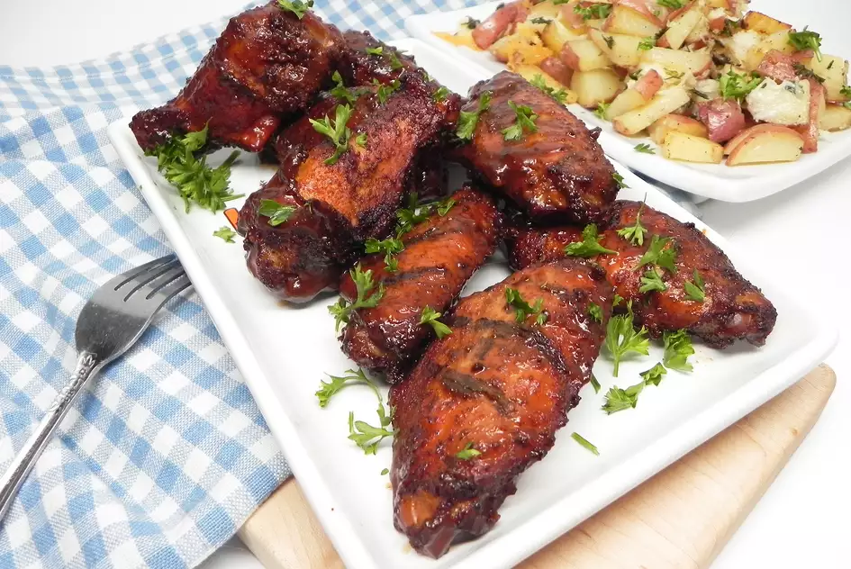

Smoked Chicken Wings

Description
These smoked chicken wings are coated in a sweet and savory spice rub then smoked until tender and coated in BBQ sauce. Preparation time: 15 mins. Cooking time: 2 hours. Serving: 6
Ingredients
- 4 pounds frozen chicken wings
- 1 tablespoon paprika
- 1 teaspoon chili powder
- 1 teaspoon onion powder
- ¼ teaspoon cayenne pepper
- ⅛ teaspoon salt
- ⅛ teaspoon ground black pepper
- hickory wood chips
- 1 (18 ounce) bottle barbeque sauce, or as needed
Steps
- Preheat the oven to 350 degrees F (175 degrees C).
- Place chicken wings on a baking sheet.
- Bake in the preheated oven for 1 hour.
- Combine paprika, chili powder, onion powder, cayenne pepper, salt, and black pepper in a small bowl. Coat baked chicken wings with the dry rub. Place wings in the smoker with the hickory wood chips.
- Smoke chicken for 1 hour at 225 degrees F (110 degrees C).
- Transfer smoked wings to a large bowl and toss with barbeque sauce.